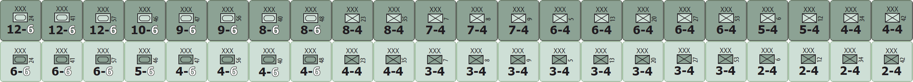
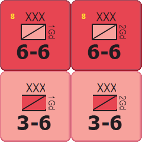
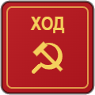
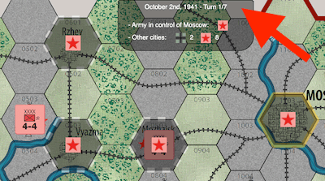

vs
vs  vs
vs
 vs vs
vs vs





 Setting Up
Setting Up

Redeployment Phase
Combat Phase
Movement Phase
Here is a summary of the procedure of each game turn embedded in this implementation of Battle for Moscow. For more details on this and other base characteristics of the game, please consult the rules.

When entering a combat phase, start clicking on defending units that you wish to attack.
For each of them, all available attacking units are highlighted and the corresponding battle odds are automatically calculated and displayed on the dashboard.
Click on the sign to add this battle to the list that will be resolved during the next step, and proceed to selecting the next battles of this turn if any.

Who controls the cities at the end of the game decides the winner. Each city is worth victory points: Moscow 5, Tula 3, every other city 1. At the end of Game Turn 9 the Russian points are compared with what the Red Army held at that date in 1941 (Moscow, Tula and Ryazan: 9 points): more is a Russian victory, fewer a German one, the same is the historical result. A German army still holding Moscow at the end wins decisively. Click the turn bar at any time to see the current points and a note on the history of the turn. (Tournament rules keep their own scoring.)
Each city's control is with the army whose units were the last ones to have entered that city.
In order to assess which city is under which army's control at any point throughout the game, simply click on the turn information bar to open a summary and highlight the cities' current status on the map. Then, click again on the turn information to close the view.
Tick a box in the Layers bar at the top left to show a status on the map; nothing is shown while the boxes are unticked. Supply: every unit cut off from its map edge (not in communication) gets a red dashed frame and its hex is shaded, and the bar counts them for both sides. Fatigue: a tired unit gets a bar of three segments under it, one filled segment per fatigue level. Press S or F to switch these layers on or off.
Units get tired when they fight, and even more when they are cut off from their map edge. Fatigue is counted in points; every 4 points is one level (at most level 3). A turn is one to two weeks: a unit that attacks every turn is tired after 4 turns and exhausted after 8, like the German divisions of Operation Typhoon by December.
The battle table shows the strengths after fatigue, with the strength lost to fatigue in the modifiers.
Moscow (up to 4 stock points) and Tula (up to 3) stockpile supplies for their garrison: at the start of the owner's turn the city gains 1 stock point if it is in communication and no enemy unit is within 2 hexes. Both start the game full. A garrison cut off in such a city lives on the stocks: as long as they last, it gains only +1 fatigue per turn (+2 if completely surrounded) and uses 1 stock point per turn (2 if completely surrounded). A city that changes hands loses its stocks. The Supply layer shows the stocks next to the city, a completely surrounded unit with a solid red frame, and a garrison living on its stocks with an orange frame.
When a Russian unit enters a German-held city during the Russian turn, the city is liberated: the Russians get 1 extra replacement step in their next Replacement Phase and the liberating unit loses one level of fatigue.
The game continues into the Russian winter counteroffensive and ends after Game Turn 9 (December 15th, 1941). Turns 8 and 9 are winter turns.
A cavalry corps may keep moving after it enters its first hex in an enemy Zone of Control during a phase, but must stop when it enters a second one.
During winter turns, a ski-reinforced army spends only 1 Movement Point to enter a forest hex, and if at least one ski-reinforced army takes part in an attack, the forest does not reduce the odds. An army loses its ski battalions when it is eliminated.
A band forms on an empty forest hex cut off from Russian communication and not next to a German unit, with strength 1 (at most 3). German lines of communication cannot pass through a band's hex or the hexes next to it, and Russian units in or next to it are in communication. At the start of each Russian turn from turn 8, every band that did not just form chooses one action:
The Germans fight back: a German unit entering a band's hex sweeps it (the band loses 2 strength and the survivors slip away into a forest within 2 hexes), and at the start of each German turn every band next to a German unit loses 1 strength. In 1941 the occupation authorities answered the partisans with mass terror: an order of 16 September 1941 set 50 to 100 executions of hostages for each German soldier killed. The terror only widened the partisan movement.
From Game Turn 9 (the order of 16 December 1941), a German unit at full strength defending in any city converts a DR result into a step loss and does not retreat, as in a major city.
A note on the history of each turn (also shown when you click the turn bar).
Sources: A. M. Samsonov's history of the battle of Moscow (militera.lib.ru/h/samsonov2); the General Staff study of the Moscow operation of the Western Front, 16 November 1941 - 31 January 1942, edited by B. M. Shaposhnikov (1943).